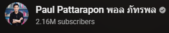

บิตคอยน์
Bitcoin คืออะไรและมีกลไกการทำงานอย่างไร
Bitcoin
คือคริปโทเคอร์เรนซีที่ทำงานบนฐานข้อมูลแบบกระจายศูนย์ที่เรียกว่าบล็อกเชน
ธุรกรรมบน Network ของ Bitcoin จะถูกบันทึกไว้บนบัญชีแยกประเภทสาธารณะ
และได้รับการยืนยันโดย Network ของโหนดที่มีอยู่ทั่วโลก
Bitcoin มีความโปร่งใสและ Permissionless (ไม่ต้องอาศัยการอนุญาต)
จึงเป็นทางเลือกยอดนิยมนอกเหนือจากระบบการเงินแบบดั้งเดิม
Bitcoin ใช้กับอะไรบ้าง
Bitcoin ใช้เป็นสกุลเงินดิจิทัลและเพื่อจัดเก็บมูลค่าเป็นหลัก สามารถใช้ซื้อสินค้าทางออนไลน์หรือในร้าน
จริงได้ เช่นเดียวกับสกุลเงินดั้งเดิม ผู้ที่มีการเชื่อมต่ออินเทอร์เน็ตจะสามารถส่งและรับ Bitcoin ได้
และการที่เป็นสกุลเงินดิจิทัลก็หมายความว่าสามารถโอนไปได้ทั่วโลก
บางครั้ง Bitcoin จะใช้เพื่อทำธุรกรรมที่เป็นส่วนตัวยิ่งขึ้น โดยธุรกรรมจะแสดงเป็นข้อมูลสาธารณะ
และ Address (คีย์สาธารณะ) จะแสดงเป็นนามแฝงแม้ว่าจะไม่ได้ปกปิดตัวตนอย่างสมบูรณ์ก็ตาม
ธุรกรรมจะแสดงอยู่บนบล็อกเชน แต่จะไม่สามารถระบุตัวตนผู้ใช้ที่อยู่เบื้องหลังธุรกรรมนั้นได้โดยง่าย
บางคนอาจซื้อ Bitcoin เป็นการลงทุนระยะยาว โดยคาดหวังว่ามูลค่าจะเพิ่มขึ้นไปตามกาลเวลา
เช่นเดียวกับทองคำหรือสินค้าโภคภัณฑ์อื่นๆ อุปทานที่มีอย่างจำกัดของ Bitcoin
และคุณลักษณะแบบกระจายศูนย์ทำให้ Bitcoin เป็นตัวเลือกที่เหมาะสำหรับนักลงทุนที่ต้องการกระจายพอร์ตการลงทุน

Bitcoin ปลอดภัยหรือไม่
หนึ่งในความเสี่ยงหลักที่เกี่ยวข้องกับ Bitcoin คือโอกาสในการถูกแฮกหรือโจรกรรม
ยกตัวอย่างเช่น ในการหลอกลวงแบบฟิชชิง
แฮกเกอร์จะใช้เทคนิควิศวกรรมทางสังคมเพื่อหลอกให้ผู้ใช้เปิดเผยข้อมูลประจำตัวหรือคีย์ส่วนตัวที่ใช้เข้าสู่ระบบ
เมื่อแฮกเกอร์เข้าถึงบัญชีของผู้ใช้หรือ Wallet สำหรับคริปโตได้ ก็จะสามารถโอน Bitcoin ของเหยื่อไปที่ Wallet ของตนเองได้
อีกวิธีหนึ่งที่แฮกเกอร์ใช้ขโมย Bitcoin คือการโจมตีโดยใช้มัลแวร์หรือแรนซัมแวร์
แฮกเกอร์สามารถทำให้คอมพิวเตอร์หรืออุปกรณ์มือถือของผู้ใช้ติดมัลแวร์
ซึ่งจะทำให้เข้าถึง Wallet สำหรับ Bitcoin ของผู้ใช้ได้ ในบางกรณี แฮกเกอร์ยังอาจใช้แรนซัมแวร์
เพื่อเข้ารหัสไฟล์ของผู้ใช้และเรียกร้องให้จ่ายเงินเป็น Bitcoin เพื่อปลดล็อกไฟล์เหล่านั้น
เนื่องจากธุรกรรม Bitcoin ไม่สามารถดำเนินการย้อนกลับได้และไม่ได้รับการประกันโดยหน่วยงานรัฐบาล
ผู้ใช้จึงต้องใช้ความระมัดระวังเพื่อปกป้องการถือครอง Bitcoin ของตนเอง ซึ่งรวมถึงการใช้รหัสผ่านที่รัดกุม
การตรวจสอบสิทธิ์แบบสองปัจจัย และการจัดเก็บ Bitcoin ไว้ใน Wallet สำหรับคริปโต ที่ปลอดภัยซึ่งแฮกเกอร์ไม่สามารถเข้าถึงได้
อีกสิ่งหนึ่งที่สำคัญคือต้องดาวน์โหลดซอฟต์แวร์ที่เกี่ยวข้องกับ Bitcoin จากแหล่งที่เชื่อถือได้เท่านั้น
ความเสี่ยงอีกประการที่มากับ Bitcoin ก็คือความผันผวนของราคา มูลค่าของ Bitcoin อาจผันผวนได้สูงในช่วงเวลาสั้นๆ
จึงเป็นการลงทุนที่มีความเสี่ยงต่อผู้ที่ไม่พร้อมสำหรับการสูญเสียที่อาจเกิดขึ้น
ข้อคิดส่งท้าย
Bitcoin คือสกุลเงินดิจิทัลแบบกระจายศูนย์ซึ่งได้รับความสนใจอย่างมากในช่วงไม่กี่ปีที่ผ่านมา
ซึ่งสร้างขึ้นเป็นทางเลือกแทนระบบการเงินแบบดั้งเดิม และดำเนินการบนเครือข่ายแบบ Peer-to-Peer (P2P)
ผู้ใช้จึงสามารถส่งและรับเงินได้โดยไม่ต้องมีคนกลาง
แม้ว่า Bitcoin จะยังเป็นเทคโนโลยีที่ค่อนข้างใหม่อยู่ แต่ก็ได้ปฏิวัติมุมมองของเราในเรื่องเงินไปแล้ว
ในขณะที่ Bitcoin และคริปโทเคอร์เรนซีอื่นๆ มีการพัฒนาไปเรื่อยๆ
เราก็ต้องคอยจับตาดูกันว่าเทคโนโลยีเหล่านี้จะกลายเป็นส่วนหนึ่งในชีวิตประจำวันของเราหรือไม่
บิตคอยคืออะไร ?
ขอบคุณข้อมูลจากช่อง
3 เรื่องแนะนำเกี่ยวกับการเงินการลงทุน

บิตคอยน์
สิ่งที่หลายคนยังไม่รู้เกี่ยวกับบิตคอยน์
บิตคอยน์ เกิดขึ้นมาได้อย่างไร?

ทองคำ
สิ่งที่คุณควรรู้ก่อนซื้อทองคำ
ทำไมทองคำถึงมีมูลค่ามากขึ้นเรื่อยๆ?

คำนวนดอกเบี้ย
คำนวนดอกเบี้ยเป็นดียังไง
ทำไมเราต้องรู้เรื่องนี้?
เคล็ดลับเพื่อความมั่นคงทางการเงิน
ควรวางแผนการใช้จ่ายให้เหมาะสมกับรายรับ โดยพิจารณาว่าค่าใช้จ่ายที่จำเป็นมีอะไรบ้าง แล้วกันรายรับส่วนหนึ่งไว้สำหรับเป็นเงินออมและค่าใช้จ่ายที่จำเป็นก่อน
หากพบว่ารายรับไม่เพียงพอก็ควรหาทางลดรายจ่ายหรือเพิ่มรายได้
ควรเตรียมรับมือกับความไม่แน่นอน
มีเงินออมเผื่อฉุกเฉิน 3 - 6 เท่าของรายจ่ายจำเป็นและภาระผ่อนหนี้ต่อเดือน
ตรวจสอบสวัสดิการและประกันสุขภาพที่มีอยู่ว่าครอบคลุมแค่ไหน หากไม่เพียงพอ การทำประกันสุขภาพเพิ่มเติมก็อาจเป็นอีกทางเลือกหนึ่ง
พิจารณาเรื่องความไม่แน่นอนของรายได้ในอนาคต ก่อนตัดสินใจกู้ยืมเงินทุกครั้ง
อาจหาแหล่งรายได้เสริมหรือนำสินทรัพย์ที่มีไปลงทุนให้งอกเงยขึ้น